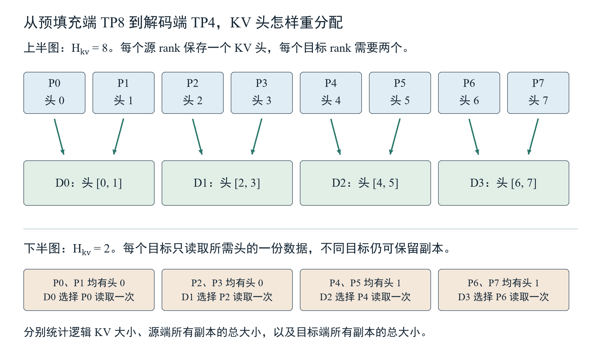
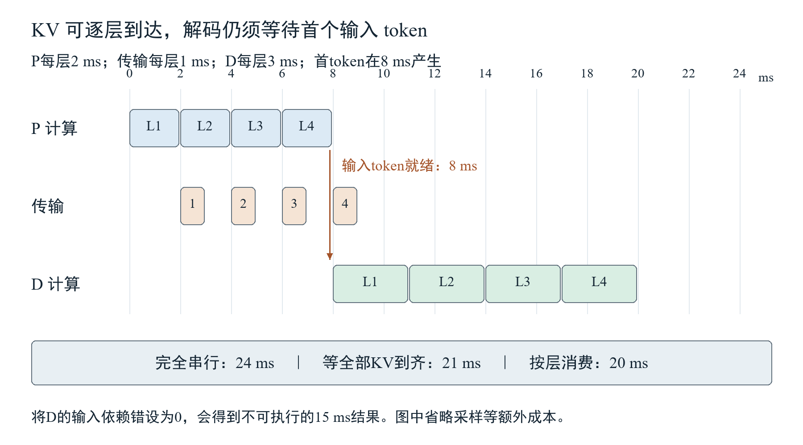

代码块旁的行号链接指向本课采用的提交，仓库及许可见课末。
1 分离式推理的排队与交接
考虑一个32K输入、持续生成数百token的请求。共置部署在同一组设备上执行prefill和decode，KV可以原地接续；长prefill也会占用正在服务其他decode请求的计算、带宽与调度机会。P/D disaggregation把prefill与decode交给不同资源池，允许分别配置并行度、batch与容量，同时增加跨池交接及新的排队。
prefill通常有较多query行，decode需要持续推进众多长驻请求，两类工作适合的资源配置可能不同。拆分可以减少直接干扰，但代价包括KV搬运、元数据协商、源页滞留、目标容量预留与故障恢复。短输入、低并发或网络繁忙时，这些新增成本可能超过收益。DistServe讨论的目标是满足TTFT与TPOT约束后的goodput，不能用无延迟约束的峰值吞吐替代。
这里QP和QD为两池排队，CP为prefill，H为交接，CD为后续生成；这是便于分账的串行模型。实际系统可以把分层保存、传输、预取与计算重叠，端到端时间应按依赖图求关键路径。不能在计算已经包含传输等待时再加一次H，也不能在尚未具备依赖条件时直接把所有阶段取最大。
首token从哪一端发送同样重要。如果P完成采样后直接把首token发给客户端，KV交接停顿可能主要反映在首token到第二token的间隔；如果D需要重放提示末尾来产生首token，交接就进入TTFT。报告P/D服务指标时，应画出真正的输出事件，避免通过移动计时边界让TTFT表面变好。
一次跨池请求需要同时观察的队列
| 队列或资源 | 积压意味着什么 | 可能影响 |
|---|---|---|
| prefill准入与计算队列 | 输入处理能力不足或热点路由拥塞 | 首输出推迟 |
| KV传输与目标分配 | 网络、目标HBM或描述符处理赶不上 | 交接停顿，源页保持更久 |
| decode准入与迭代 | 输出长度或长驻并发上升 | ITL/TPOT增加，反向挤压prefill |
| 低层缓存恢复 | DRAM、SSD或远端读取排队 | 缓存命中仍可能等待很久 |
2 KV 传输的有效字节数
普通GQA在L层、序列长度S、Hkv个KV heads、每头维度d、每元素p字节时，完整K/V容量为2LSHkvdp。乘2对应K与V；Hkv由模型配置决定，不能替换成query heads。这个式子给出一份完整逻辑状态的载荷，物理复制、页对齐与量化元数据还要另算。
取L=32、S=32768、Hkv=8、d=128、BF16，完整KV为4 GiB。TP8且每rank恰好持有一个不同KV head时，每rank为512 MiB，总量仍为4 GiB。若每rank独立占用同一聚合出口，不能把单rank传输时间直接当成整个请求的交接时间；出口带宽会被八路分片共同分摊。
4 GiB经过有效32 GiB/s链路，纯数据下界125毫秒。标称400 Gb/s是每秒4000亿bit，理想50 GB/s，约46.57 GiB/s；相同4 GiB对应约85.9毫秒，仍未扣协议、拥塞、PCIe和内存路径损耗。有效带宽必须与计入的字节范围相同，不能混用Gb、GB和GiB。
普通分页还可能传输未满尾页。例如page=16、有效长度33，逐整页发送48个位置比有效长度多45.45%的位置容量。实现可以裁剪、使用虚拟传输页或合并连续区域，但必须把有效token边界同时交给接收方。若量化KV包含scale，遗漏scale的字节量看上去更小，恢复出的数值却没有正确含义。
MLA潜变量、跨层共享、SWA窗口、稀疏index记录和循环状态应使用第十一课的真实记录结构计量。源端多个层的逻辑引用可能指向同一物理存储；把所有层引用都序列化会重复发送。传输设计必须明确是按逻辑层导出、按物理region导出，还是按模型定义的可恢复状态导出。
↑ 返回知识点目录3 KV 交接协议
一个可靠的交接记录至少回答：这是哪个模型与请求的哪次尝试，已计算到哪个token边界，各层或region的数据在哪些源页，目标页由谁分配，使用哪种dtype和物理布局，以及谁在什么条件下允许释放。网络库只看到地址和长度，无法替上层判断某个字节区间是否属于正确的模型历史。
代码 1 vLLM NIXL握手描述包含地址、页长、步幅与布局
@dataclass
class NixlAgentMetadata:
engine_id: str
agent_metadata: bytes
kv_caches_base_addr: list[int]
device_id: int
num_blocks: int
block_lens: list[int]
block_strides: list[int]
kv_cache_layout: str
block_size: int
ssm_sizes: tuple[int, int]
attn_backend_name: str
physical_blocks_per_logical_kv_block: int
region_num_blocks: list[int] | None = None
region_group_ids: list[int] | None = None
region_names: list[str] | None = None
region_mem_types: list[str] | None = Nonekv_caches_base_addr提供region基址，block_lens与block_strides描述每块载荷及相邻块距离；block_size是token粒度。region_mem_types还能区分所在内存介质。这些量不能互相替代，尤其不能默认stride等于有效载荷长度。
metadata.py第90—104行把握手分成两阶段：先解析兼容性hash，再在兼容条件成立后解析具体agent metadata。协议版本覆盖字段、wire格式、页组织等变化。一次字节复制全部完成，也可能因为两端布局或推测模型配置不兼容而得到错误状态；兼容性检查需要在发布传输前完成。
引擎重启或重新注册缓存后，旧基址与旧访问凭据可能失效。pull_worker.py第146—155行比较remote registration generation，发现新代后清理旧agent并重新握手。request ID和registration generation描述不同层次：前者区分业务请求，后者区分一批底层内存注册的有效时期。
控制信息与载荷各自承担的责任
| 信息 | 用途 | 缺失时的后果 |
|---|---|---|
| 请求尝试ID、模型条件、token边界 | 确认恢复的计算语义 | 把旧尝试或不同前缀接到当前请求 |
| region、head、页长、stride、dtype/scale | 构造源到目标地址映射 | 字节到达但解释错误 |
| 注册代数、远端agent与访问元数据 | 确认地址空间仍有效 | 访问旧注册或已复用地址 |
| 完成、失败、租约与释放通知 | 管理在途读写与源页保留 | 过早复用或长期泄漏 |
4 调度器中的外部命中与加载状态
vLLM的connector将scheduler侧与worker侧职责拆开。scheduler先查询本地已计算前缀之外还能从外部恢复多少token，再为这些token分配本地页。异步恢复期间，请求需要等待接收完成；worker按照本轮绑定的metadata执行实际搬运，并把完成或失败报告回调度器。
代码 2 外部命中接口区分未知、零命中和异步加载
Returns:
A tuple with the following elements:
- An optional number of tokens that can be loaded from the
external KV cache beyond what is already computed.
If None, it means that the connector needs more time to
determine the number of matched tokens, and the scheduler
should query for this request again later.
- `True` if external KV cache tokens will be loaded
asynchronously (between scheduler steps). Must be
'False' if the first element is 0.
Notes:
The connector should only consider the largest prefix of prompt-
tokens for which KV cache is actually available at the time of the
call. If the cache cannot be loaded for some tokens (e.g., due to
connectivity issues or eviction), those tokens must not be taken
into account.返回None表示查询尚未确定，需要以后再查；返回0表示没有可加载token，此时异步标志必须为False。非零匹配只能覆盖当前确实可获取的有效前缀，不能把已经驱逐或无法连接的数据算进可复用长度。
例如提示1024个token，本地已算256，外部缓存可恢复到768，则新增外部命中为512，剩余256需要计算。接口报告的数量是超出本地进度的增量，不能把768再次加到256上。页对齐、最后位置logits需求和模型状态可能进一步限制有效命中边界。
代码 3 异步路径可以经历两次分配回调，加载由num_external_tokens决定
"""Update KVConnector state after block allocation.
If get_num_new_matched_tokens previously returned True for a
request, this function may be called twice for that same request -
first when blocks are allocated for the connector tokens to be
asynchronously loaded into, and second when any additional blocks
are allocated, after the load/transfer is complete.
Decide whether to load based on `num_external_tokens`, not on
whether `blocks` is empty: `blocks` may be non-empty even when
`num_external_tokens == 0` (e.g. a non-chosen sub-connector of
MultiConnector still receives the request's real blocks).
Args:
request (Request): the request object.
blocks (KVCacheBlocks): the blocks allocated for the request.
num_external_tokens (int): the number of tokens to load from the
external KV cache. 0 means nothing should be loaded.第一次分配目标缓存页以供异步接收，完成后还可能为新计算分配额外页。源码特别说明blocks非空也可能没有选中该子connector的加载工作，因此不能用“存在页表”替代num_external_tokens>0。
恢复失败时，已分配目标页里可能只有部分有效内容。调度器应根据失败结果重新确定可用前缀或转入重算，不能只把等待状态改成RUNNING。对于多rank执行，完成条件还要覆盖所有必要分片；某个rank没有实际传输，也必须给出相应完成报告，否则聚合端会一直等待。
代码 4 合法的空分片仍需参加完成报告
if any(len(group) > 0 for group in meta.local_block_ids):
# The scheduler waits for finished_recving from *every* worker.
# Under DCP a rank's slice can legitimately come out empty when its
# interleaved positions fall past the end of the sequence. _read_blocks
# then takes the notify-only path without registering a transfer.
# Seed the entry so this rank still reports completion.
self._recving_transfers.setdefault(req_id, [])
remote_region_groups = self.dst_region_group_ids[engine_id]
local_region_groups = self.region_group_ids or remote_region_groupsDCP下某rank负责的位置可能越过序列末尾，读路径只有通知而没有实际transfer。预先建立空在途条目使该rank也能报告完成，避免“没有工作”变成“永远没完成”。
↑ 返回知识点目录5 KV 读取与源页释放
代码 5 attention消费某层之前，需要确认该层恢复可见
@abstractmethod
def wait_for_layer_load(self, layer_name: str) -> None:
"""Block until the KV for a specific layer is loaded into vLLM's
paged buffer. This is called from within attention layer to ensure
async copying from start_load_kv is complete.
This interface will be useful for layer-by-layer pipelining.
Args:
layer_name: the name of that layer
"""
pass这是connector抽象允许的分层同步点；具体实现可能采用全请求接收完成后再运行，也可能逐层流水。看到这个接口存在，无法直接断言某个NIXL或Mooncake后端已实现所有分层重叠。
数据从网络进入设备内存以后，还要满足具体平台、后端与执行stream要求的可见性契约。模型开始读取的事件必须排在写入完成之后；host staging路径还包含DRAM到HBM复制。完成报告、设备内存可见性与模型消费三个边界应沿实现逐个核对。
代码 6 异步保存必须保留源页直到完成已回报给scheduler
def wait_for_save(self):
"""Submit saves and perform required synchronization.
Called once per step, including empty steps, after any target and draft
forwards. Metadata remains bound during this call. Do nothing if there
is no save work.
Async saves must retain their source blocks until completion is reported
to the scheduler. Otherwise, wait for saves to finish before returning.
"""
pass每轮target和draft forward结束后调用，包括空step。若异步保存无法继续持有源块，函数就必须等保存完成再返回；方法名中的wait并不强制所有实现采用同一种同步方式。
代码 7 业务生成结束时，connector可以接管延迟释放责任
def request_finished(
self,
request: "Request",
block_ids: list[int],
) -> tuple[bool, dict[str, Any] | None]:
"""Called exactly once when a request has finished, before its blocks are
freed.
The connector may assume responsibility for freeing the blocks
asynchronously by returning True.
Returns:
True if the request is being saved/sent asynchronously and blocks
should not be freed until the request_id is returned from
get_finished().
Optional KVTransferParams to be included in the request outputs
returned by the engine.
"""
return False, None返回True表示块暂时不能释放，直到get_finished回报该请求完成。这个布尔值交接的是页生命周期责任，不能理解成数据已经保存成功。
P节点刚完成请求时，D可能还没开始读取。若立即把P页返还allocator，新请求可向相同地址写入KV；D随后读到的内容就可能混合两代请求。延迟释放需要一直持有源页或等价所有权，直到所有获准读者结束，或通信后端已确认取消并退休相关访问。
pull_scheduler.py第254—279行给需要延迟释放的块设置保留期，并导出远端已计算token数和裁剪后的块列表。租约可以防止对端失联时无限保留，但需要与续约、到期拒读及传输退休协议协同。一个超时钟表本身无法终止已经发给NIC的读写。
↑ 返回知识点目录6 NIXL 的内存注册与传输描述符
注册描述的是较长期有效的内存区域及访问能力；transfer descriptor描述本次读写哪些子区间。把一个大KV池注册一次，再为请求挑选其中的页，可以摊薄注册和元数据交换成本。注册并不分配模型的逻辑KV，也不会自动为每个请求计算head与页映射。
代码 8 官方示例导出基址、行大小和描述符列表
# Extract layout information to send to the initiator so it can generate descriptors locally.
base_addr = tensor.data_ptr()
tensors = int(tensor.shape[0]) # 16
tensor_size = int(tensor.shape[1] * tensor.element_size()) # bytes per tensor
dev_id = tensor.get_device()
if dev_id == -1:
dev_id = 0
mem_str = "cuda" if str(tensor.device).startswith("cuda") else "cpu"
# Send descriptor list + layout to the initiator after its metadata is received.
try:
# Build transfer descriptors by unraveling the first dimension into a list of tensors
target_tensors = [tensor[i, :] for i in range(tensor.shape[0])]
target_descs = agent.get_xfer_descs(target_tensors)
if not target_descs:
logger.error("Failed to build target transfer descriptors.")
sys.exit(1)
target_desc_str = agent.get_serialized_descs(target_descs)示例张量为[16,32] FP32，因此每行128 B、总区域2048 B。target_tensors按第一维展开成16个描述符，底层仍位于同一注册tensor。源码示例用于解释地址关系，本课没有执行它。
假设本地页槽位[4,1,9]要从远端逻辑顺序对应的物理槽位[7,2,8]恢复。按顺序配对这两列描述符，就得到三次正确搬运；只排序其中一列会把第一个逻辑块的内容写进另一个块。描述符列表记录地址区间，逻辑token顺序由上层映射保留。
代码 9 预处理描述符列表后，每次传输只选择两侧的索引
handle = self.agent.makeXferReq(
op,
local_xfer_side._handle,
local_indices,
remote_xfer_side._handle,
remote_indices,
notif_msg,
handle_list,
skip_desc_merge,
)
return nixl_xfer_handle(self, handle)READ/WRITE先转换成内部operation；local_indices与remote_indices选择各自列表中的区域。notif_msg随本次操作绑定。返回句柄只代表请求已构造，还要调用transfer发起工作。
代码 10 提交可能立即完成，也可能仍在处理中或失败
def transfer(self, handle: nixl_xfer_handle, notif_msg: bytes = b"") -> str:
"""Initiate a data transfer operation.
After calling this, the transfer state can be checked asynchronously till completion.
In case of small transfers that are completed as part of the call itself, return value
will be "DONE", otherwise "PROC" or "ERR".
Args:
handle: Handle to the transfer operation, from make_prepped_xfer, or initialize_xfer.
notif_msg: Optional notification message can be specified or updated per transfer call.
notif_msg should be bytes, as that is what will be returned to the target, but will work with str too.
Returns:
Status of the transfer operation ("DONE", "PROC", or "ERR").
"""
status = self.agent.postXferReq(handle._handle, notif_msg)
if status == nixlBind.NIXL_SUCCESS:
return "DONE"
elif status == nixlBind.NIXL_IN_PROG:
return "PROC"
else:
return "ERR"postXferReq之后明确返回DONE、PROC或ERR；PROC需要继续查询。initialize_xfer也只是组合准备接口，其名字不表示数据已完成传输。长期重复区域可以使用prep_xfer_dlist与make_prepped_xfer，减少重复准备。
READ中发起端读取远端源区间并写入自己的目标；WRITE中发起端把本地源写入远端目标。操作发起者与数据生产者可以不同，不能只用“发送端/接收端”推断API字段含义。远端通知用于告诉持有者传输已完成或读者已退出，仍需验证通知属于哪个请求、哪次尝试和哪批注册。
↑ 返回知识点目录7 Mooncake 的批传输完成条件
Mooncake Transfer Engine用segment标识可访问的地址空间。打开segment取得句柄，注册本地内存并获得必要远端元数据后，调用者构造TransferRequest列表，再为这批请求分配batch ID。实际路径由配置、可用transport、内存位置与拓扑决定，项目名称本身无法保证某一次传输必走GPUDirect RDMA。
代码 11 每个请求明确写出操作、长度、本地地址、远端segment和偏移
auto batch_id = engine->allocateBatchID(FLAGS_batch_size);
Status s;
std::vector<TransferRequest> requests;
for (int i = 0; i < FLAGS_batch_size; ++i) {
TransferRequest entry;
entry.opcode = opcode;
entry.length = FLAGS_block_size;
entry.source = (uint8_t*)(addr) +
FLAGS_block_size * (i * FLAGS_threads + thread_id);
entry.target_id = segment_id;
entry.target_offset =
remote_base +
FLAGS_block_size * (i * FLAGS_threads + thread_id);
entry.nic_hint = nic_hint_id;
requests.emplace_back(entry);字段source保存本地buffer地址，target_id定位远端segment，此例target_offset由remote_base加块偏移组成；opcode决定READ或WRITE方向。READ时本地buffer承接远端数据，不能仅凭source这个字段名判断数据流向。
示例按block_size与thread_id切出不同区间，避免多个线程无意写入同一范围。nic_hint是路径提示，实际带宽仍受NIC、PCIe、内存和其他在途工作影响。
代码 12 提交成功后，示例逐任务检查COMPLETED或FAILED
s = engine->submitTransfer(batch_id, requests);
if (!s.ok()) LOG(ERROR) << s.ToString();
LOG_ASSERT(s.ok());
for (int task_id = 0; task_id < FLAGS_batch_size; ++task_id) {
bool completed = false;
TransferStatus status;
while (!completed) {
Status s = engine->getTransferStatus(batch_id, task_id, status);
LOG_ASSERT(s.ok());
if (status.s == TransferStatusEnum::COMPLETED)
completed = true;
else if (status.s == TransferStatusEnum::FAILED) {
LOG(INFO) << "FAILED";
completed = true;
exit(EXIT_FAILURE);
}
}submitTransfer返回成功只表示提交被接受。后面的getTransferStatus才观察任务状态；benchmark将失败当作运行失败退出。生产服务需要将错误传回请求恢复路径，并保持相关缓冲的生命周期。
这一段是benchmark的控制循环，不能直接把忙轮询搬进在线服务的主调度线程。大量小传输可能让轮询占满CPU，长传输还需要超时、取消、进度管理和批量状态收集。优化轮询方式可以减少CPU开销，但完成条件不随之放松。
批量提交可以摊薄固定开销，也可能增加队头等待。若等待攒满128页才发送，首批本可使用的层会额外等待；若每个很小的片段单独提交，描述符处理和网络消息开销上升。实际应根据页连续性、可消费粒度与队列压力选择聚合单位，记录提交到物理完成的完整时间。
情境 P 为 prefill 端，D 为 decode 端。P 产出 KV，传输句柄仍为 PROC，D 尚未确认完成。
问题 P 何时可释放源页？在此之前覆盖会造成什么后果？
答案
结论 待传输确定不再读取本代源页后释放，否则 DMA 可能读入新请求的内容。
推导 prefill 完成表示写入已产生。PROC 表明搬运仍可能读取这些页，P 须保留源缓冲及相关注册，等待该传输的物理完成或后端确认安全退休，再解除引用。否则旧 DMA 可能读到下一请求写入的内容。
回看题干 ↑8 传输超时、取消与缓冲释放
代码 13 waitFor超时不会取消传输，析构会等待物理完成
// Destruction waits for physical completion before releasing state.
~ScatterTransferOperation();
ScatterTransferOperation(const ScatterTransferOperation&) = delete;
ScatterTransferOperation& operator=(const ScatterTransferOperation&) =
delete;
// Single-consumer operation: do not wait concurrently or from a
// fragment completion callback.
Status wait();
// A wait timeout does not cancel the transfer. Keep this operation and
// its CPU/GPU buffers alive until a later wait reaches completion.
Status waitFor(std::chrono::nanoseconds timeout);wait/waitFor规定单消费者，禁止在fragment完成回调中等待自身。超时后operation以及CPU/GPU buffers都必须继续存活，直到后续等待取得完成。把operation放在临时作用域中，还可能在析构时意外阻塞控制线程。
代码 14 释放活跃句柄时尝试取消，无法取消就保留句柄并报错
def release_xfer_handle(self, handle: nixl_xfer_handle):
"""Releases a transfer handle, which internally frees the memory used for the handle.
If the transfer is active, NIXL will attempt to cancel it.
If it cannot be canceled, an error will be returned and the handle will not be freed.
Args:
handle: Handle to the transfer operation from initialize_xfer or make_xfer.
"""
handle.release()release可能失败。调用者需要处理取消失败，继续持有句柄和被访问缓冲；捕获异常后直接丢弃全部引用会破坏这个契约。
代码 15 vLLM在释放失败时明确保留handle和blocks
def _try_release_xfer_handle(self, req_id: str, handle: int) -> bool:
"""Release a handle, returning False if the caller must retain it."""
try:
self.nixl_wrapper.release_xfer_handle(handle)
except Exception as e:
# A status error does not guarantee that the backend stopped DMA.
self._log_failure(
failure_type="transfer_release_failed",
msg="Retaining handle and blocks until release succeeds",
req_id=req_id,
error=e,
)
return False
return True注释直接说明status error无法证明后端已经停止DMA。返回False告诉上层保留在途记录；_pop_done_transfers还区分“观察到失败”和“已经没有未退休句柄”。
设传输T1在0毫秒提交，50毫秒业务超时，服务决定重算T2。如果T1仍可能在80毫秒向原目标页写入，T2在60毫秒复用同页就会被旧数据覆盖。增加request generation可以让上层拒收T1的旧完成通知，却无法阻止已发出的物理写；目标页必须隔离到旧访问退休，或使用能够确认完成的取消机制。
Mooncake当前freeBatchID另有细节：engine.h第272—274行规定OK与BatchCleanupDeferred都会使batch ID失效，deferred清理时在途transport仍可能持有缓冲。不能释放ID后继续拿它轮询，也不能仅凭ID失效就释放数据buffer。benchmark是在所有任务已完成后清理，因此其deferred注释特指回调还在退出；其他调用路径必须保留各自的缓冲所有权。
失败恢复可以停止输出、撤销可用标记并准备替代副本，但旧传输的退休与新结果的发布要分开推进。通信错误属于请求恢复的一部分，同时也是allocator的输入；只在HTTP层返回错误，底层页仍可能处于不可安全复用状态。

业务超时之后，旧DMA可能继续访问原页。请求尝试编号帮助拒收旧结果，缓冲退休协议防止旧写覆盖新数据。
情境 旧 KV 传输返回 ERR，句柄释放也失败。D 希望立即用同一目的页重算。
问题 给出安全的恢复顺序，并说明迟到的旧写入为何危险。
答案
结论 隔离旧页和句柄，确认旧写入退休；需要立即恢复时使用新页。
推导 错误状态不足以证明旧写入已停止。隔离该句柄和目标页，按后端合同排空、取消并确认退休；其间需要恢复服务，可在新的安全页上重算。核对 attempt 与 generation，确保迟到事件不能发布或释放新一代结果。
回看题干 ↑9 TP8 到 TP4 的 KV 重排
先取普通GQA，Hkv=8，P侧TP8、D侧TP4。P的每rank保存一个KV head；D每rank需要两个head。D0从P0和P1取得head0、1，D1从P2、P3取得head2、3，以此类推。完整逻辑KV仍为同一份，但每个目标页内head排列和来源段数改变。
代码 16 P的TP度较大时，D选择多个源rank，并对重复KV head去重
else:
# P (remote TP) > D (local TP): one local rank
# reads from multiple remote ranks.
# GQA dedup: when K < remote_tp_size, several remote ranks
# hold the same KV head. np.unique keeps only the first
# rank per unique head so we don't issue redundant reads.
abs_tp = remote_tp_size // tp_size
start = tp_rank * abs_tp
heads = np.arange(start, start + abs_tp) * total_num_kv_heads // remote_tp_size
_, unique_idx = np.unique(heads, return_index=True)
attn_ranks = (start + np.sort(unique_idx)).tolist()abs_tp给出每个D rank覆盖的P rank区间。heads将这些rank映射到真实KV head，np.unique只保留相同head的一个源，避免在同一目标分片内做重复读取。
当Hkv=2、P侧TP8时，源rank0—3可能复制head0，rank4—7复制head1。D侧TP4也需要复制：D0和D1持有head0，D2和D3持有head1。该映射可为四个目标rank分别选择P0、P2、P4、P6；同一D rank无需把相同head的两份源副本都读一遍，但不同D rank所需的目标副本仍然存在。
沿本课32层、32K、d=128、BF16配置，Hkv=2的唯一逻辑KV为1 GiB。若P的8个rank各存一个head，物理总量为4 GiB；D的4个rank各存一个head，目标总量为2 GiB。合理去重后，交接有效载荷可以按目标所需2 GiB核算，不能简单乘源rank数，也不能只按1 GiB唯一逻辑状态就假设所有目标副本已具备。
代码 17 D的TP度更大时，需要定位远端页中属于本地的head片段
def compute_head_offset(
tp_rank: int, tp_size: int, remote_tp_size: int, total_num_kv_heads: int
) -> int:
"""Return the offset in local head slices within the remote KV block."""
if tp_size <= remote_tp_size:
return 0
if tp_size > total_num_kv_heads:
remote_rank = tp_rank * remote_tp_size // tp_size
local_head = tp_rank * total_num_kv_heads // tp_size
remote_head = remote_rank * total_num_kv_heads // remote_tp_size
return local_head - remote_head
return tp_rank % (tp_size // remote_tp_size)本地TP与远端TP的关系不同，偏移规则也不同；当TP超过KV head数量时，代码显式考虑复制映射。这里的返回值是head切片偏移，仍要结合具体region字节布局形成地址。
MLA通常按潜变量复制或采用其他分片策略，当前mapping代码对MLA和DCP另设分支；线性状态又有SSM source ranks。不能把普通GQA的head拼接规则直接应用到混合模型。传输计划应按cache group或region记录来源，必要时同一请求同时运行不同映射。

普通GQA的P侧TP8到D侧TP4映射。下方说明KV head数量不足时的复制与同目标去重边界。
↑ 返回知识点目录10 跨进程页映射与有效范围
源端物理页7和目标端物理页7是两个独立allocator中的编号，没有天然对应关系。传输描述需要从逻辑token区间出发，找到两端物理页，再按layer/region、K或V、head与页内token位置形成字节区间。遇到不同页大小时，还要把一个源区间拆分或合并到目标页。
这个地址式只针对教学布局[page, K/V, head, token_in_page, dim]，维度j连续；k为0或1，P为每页token数，b为物理页号。其他布局需要重新按各轴stride推导。页间stride可以大于有效载荷长度，不能把padding当作模型KV发送或解释。
取源页P=16、H=1、d=4、p=2，单页有效256 B、页stride=288 B。逻辑token19位于第二页，页内t=3；其V、head0、dim2相对基址偏移为288+(((1×1+0)×16+3)×4+2)×2=444 B。目标P=32、H=2时，该token在首个目标页，head0对应偏移(((1×2+0)×32+19)×4+2)×2=668 B。相同数值的两端地址不同。
若源页大小16、目标页大小32，有效长度48，源端三页可对应目标一页完整32位置加一页16位置。逐整目标页发送会涉及64位置容量；只发送48位置必须把有效尾界告诉接收端。pull_worker.py第188—205行因此在P/D页大小不同时要求remote_num_tokens，缺失就拒绝远端读取。
每层有两个K/V区域、32层、48个源页时，朴素逐层逐页会产生3072个片段；若一些区域按页或层连续，可合并描述符，但只能合并两端都保持正确相邻关系的区间。合并并不允许跨越不属于本请求的物理页，也不能把共享区域重复计为独立载荷。
↑ 返回知识点目录11 逐层传输的 token 依赖
考虑四层教学模型：P每层2毫秒，网络每层KV传输1毫秒，D处理一个新token每层3毫秒。源KV在对应P层完成后即可发送，网络完成时刻依次为3、5、7、9毫秒。假设首个生成token在P第4层结束的8毫秒产生，忽略独立采样开销；D要处理这个token，最早从8毫秒开始。
即使D第1层KV在3毫秒到达，也无法在3毫秒就处理尚未产生的token。如果实现支持按层消费，D四层可在8—11、11—14、14—17、17—20毫秒执行，因为后续层KV都已经及时到达。若实现要求全部KV接收完成再运行，D从9毫秒开始，完成于21毫秒。完全串行的P计算、四层搬运和D计算则为8+4+12=24毫秒。
ai表示本层数据可用时间，fi−1表示上一层输出可用时间；第1层的f0必须取当前输入token可用时间，本例为8毫秒。这个递推同时体现网络与模型依赖。将f0错设为0会算出15毫秒的漂亮结果，却提前消费了尚未生成的token。
如果 decode 端重放已知的 prompt 尾部，或直接从远端缓存恢复，就不需要等同一轮 prefill 生成输入。测量这两种路径时应分别记录依赖。实现提供 wait_for_layer_load 接口后，还需核对 attention 后端、connector 和 CUDA Graph 实际等待的事件。

四层教学时间线：传输可随P层逐步开始，D仍需等待8毫秒产生的输入token。图示为可行性推导，未测量实际后端。
若P直接在8毫秒将首token送给客户端，本例D的后续输出到20毫秒才产生，首个ITL约12毫秒。网络隐藏了多少时间，需要看这条关键路径；仅统计传输总时长4毫秒，无法判断它在用户可见延迟中暴露了多少。
↑ 返回知识点目录12 分层缓存的预留与发布
KV分层存储把GPU服务中的状态扩展到主机内存、磁盘或远端介质。当前LMCache源码使用L1 manager与L2 adapter组织缓存；具体L1介质由配置决定，不能把内部L1这个名字直接等同于GPU HBM或硬件一级缓存。本节阅读其对象生命周期，与前面的vLLM页生命周期相互对照。
代码 18 写入预留可以部分成功，临时对象有独立保留策略
def reserve_write(
self,
keys: list[ObjectKey],
layout_desc: MemoryLayoutDesc,
is_temporary: bool = False,
) -> dict[ObjectKey, MemoryObj]:
"""
Reserve the object for writing into the storage manager.
Args:
keys (list[ObjectKey]): List of object keys to reserve for writing.
layout_desc (MemoryLayoutDesc): Description of the memory layout
for the objects to be reserved.
is_temporary: Store the objects as temporary: L1 deletes each one
when its last read lock is released, and never offloads it
to L2.
Returns:
dict[ObjectKey, MemoryObj]: A dictionary mapping object keys to their
reserved memory objects. Note that not all requested keys could be
reserved (e.g., out of memory or write conflict)返回字典只包含实际获得内存的对象，OOM或写冲突可使部分key失败。is_temporary对象在最后一个读锁释放后删除，并且不向L2 offload；临时中转数据与长期复用缓存可以采用不同策略。
代码 19 写入完成后才将对象变成读者可见，重复副本可以丢弃
def finish_write(
self,
keys: list[ObjectKey],
l1_owners: dict[ObjectKey, int],
) -> None:
"""
Finish writing the objects into the storage manager.
Admits the objects reserved by :meth:`reserve_write`: each becomes
visible to readers unless the key is already resident, in which case
the reserved copy is dropped.
Args:
keys (list[ObjectKey]): List of object keys that have been written.
l1_owners: The L1 manager each key was reserved in, built from the
reserved objects with :func:`l1_owners_of`.
Raises:
ValueError: ``l1_owners`` omits a key or names an unregistered L1
manager.
"""
finish_result: dict[ObjectKey, L1Error] = {}
for owner, group in self._group_by_owner(keys, l1_owners).items():
finish_result.update(
self._l1_managers_by_id[owner].finish_write(group, tag=_L1_WRITE_TAG)reserve_write只是取得写入位置；finish_write负责发布已写好的对象。如果key已存在，预留副本可以被丢弃。l1_owners记录每个key在哪个manager里，不能在跨manager回调时猜测所属池。
假设对象K跨两段传输，第一段完成后第二段失败。若第一段到达就把K发布为命中，读者会消费半个对象；正确路径应保持写入未完成状态，再选择补齐、丢弃或重试。缓存命中统计也应依据可读对象，而非已经预留的地址或某个片段完成通知。
实际DMA结束必须发生在finish_write允许发布之前；finish_write作为管理接口无法替调用者等待所有外部异步写入。读者同样要持有读锁，直到从该对象复制或消费的所有访问结束。释放Python层上下文与GPU复制完成可能发生在不同时间，需要在集成层建立相应事件顺序。
这与数据库中的“先准备再提交”有相似的可见性要求，但这里的数据页还受设备异步访问约束。多对象请求可能只命中部分key，正常恢复需要按照模型的有效前缀或分组状态要求解释这些命中；普通因果Transformer的随意中间片段不能直接跳过缺失历史。
↑ 返回知识点目录13 预取完成与缓存读锁
LMCache的submit_prefetch_task向L1发起异步预取，允许的L1/L2介质与key分组由PrefetchTaskSpec表达。它返回PrefetchHandle以供查询，不能把返回handle当作所有对象已经到达。底层对象可能在L1已命中，也可能需要从L2加载，最终结果需要逐对象或逐分组解释。
代码 20 结果完成后只返回一次；返回None的含义需要结合调用状态
def query_prefetch_status(self, handle: PrefetchHandle) -> PrefetchResult | None:
"""
Query the status of the prefetch task.
Args:
handle (PrefetchHandle): The handle of the prefetch task.
Returns:
The task's result once it has finished, None while it is still
in progress.
Note:
Each result is returned once; later calls for the same handle
return None.
"""
if handle.prefetch_request_id == -1:
return PrefetchResult(hit_cells=[], l1_hit_cells=[], l2_hit_cells=[])
result = self._prefetch_controller.query_prefetch_result(
handle.prefetch_request_id
)
if result is None:
return None正常进行中返回None；同一handle的结果被消费后，后续查询也返回None。因此调用者应保存首次取得的结果，不能把已经消费后的None误判为任务重新进入进行中。
wait_prefetch_status可以阻塞等“结果可取”或超时，然后仍通过query取得具体结果。结果可取只表示这次预取已经形成报告，并不等于每个请求key都命中。当前代码记录retained keys、L1 hits与L2 hits，指标需要保留这些分母和来源。
代码 21 消费完成后释放对应对象的读锁数量
def finish_read_prefetched(
self,
keys: list[ObjectKey],
read_locks: int = 1,
l1_owners: dict[ObjectKey, int] | None = None,
) -> None:
"""Finish reading prefetched objects.
Args:
keys: Object keys that have been read.
read_locks: Read locks to release per key (the whole
reservation when releasing a lookup's locks).
"""
finish_result = self._finish_read_objects(keys, read_locks, l1_owners)
successful_keys = [k for k, e in finish_result.items() if e == L1Error.SUCCESS]read_locks可表示同一lookup持有的多个读引用，l1_owners定位所属manager。释放数量与原先预留不匹配，可能造成对象长期不可淘汰或过早复用。
假设普通因果缓存分成四个连续块，结果只命中第0、1、3块。第0、1块可以形成可恢复前缀，第3块无法让模型直接跳过缺失的第2块；即使第3块的字节存在，也要根据模型及缓存协议判断后续使用方式。SWA、跨层压缩和状态快照采用各自的有效范围规则，不能把任意hit bitmap都压成一个“总命中token数”。
预取也有容量与带宽成本。如果一次把大量可能用不到的对象搬进L1，会挤掉热点缓存并占用源端读锁。合理的ahead距离取决于何时能消费、预取成功概率、目标容量和I/O队列；请求取消后仍要退还读锁及临时对象，不能只从前端队列删掉request ID。
↑ 返回知识点目录14 远端 KV 恢复与本地重算
QR为恢复队列等待，α为查找、调度与固定准备开销，C/W为所用路径的数据时间，后两项为格式转换与必要重放。重算候选也有QP+CP。比较的是当前负载下两条完整路径，静态“缓存命中更快”的判断无法覆盖拥塞或很短的前缀。
教学例子：2 GiB远端KV，有效20 GiB/s，查询与排队10毫秒，转换和重放15毫秒，恢复共125毫秒。无排队重算为300毫秒时，恢复节省175毫秒；重算为70毫秒时，恢复更慢。但若70毫秒重算前还要排队100毫秒，恢复又会优于170毫秒的重算路径。
该分界只在分母为正、固定项和带宽可近似独立时成立。按上例300毫秒重算与25毫秒其他恢复开销，2 GiB需要超过约7.27 GiB/s才值得恢复；若其他开销已超过重算总时间，再大的传输带宽也无法让此模型中的恢复获胜。
CPU staging路径可能包含源GPU到DRAM、网络、目标DRAM到GPU三个阶段。取2 GiB、两端复制各40 GiB/s、网络20 GiB/s，完全串行数据时间为50+100+50=200毫秒；分成四个0.5 GiB块且三个阶段资源独立时，理想流水数据时间为12.5+4×25+12.5=125毫秒。共享PCIe或内存带宽会使这个理想值失效。
直接设备传输在同一20 GiB/s有效网络假设下的数据下界为100毫秒，但能否走这条路径由平台、注册方式与backend支持决定。评估zero-copy时应标明省掉了哪次中转、是否仍有布局转换，以及把CPU开销转移到了何处。链路宣传带宽无法替代目标路径的有效带宽。
保留缓存本身也需要准入。用一个简化收益模型：未来复访概率p乘以重算节省175毫秒，再减去写入代价20毫秒。p=0.2得到15毫秒期望收益，p=0.05得到−11.25毫秒；这个模型尚未计容量机会成本与跨请求资源争用，只用于说明一次性对象可能不值得落到远端或SSD。
情境 恢复路径需 125 ms；重算路径需先排队 100 ms，再执行 70 ms，其余成本相同。
问题 选更快路径，求两者差值以及排队时长的无差别点。
答案
结论 选恢复，快 45 ms；排队 55 ms 时打平。
推导 重算路径要等 100+70=170 ms，远端恢复为 125 ms，理想提前 45 ms。临界排队为 125−70=55 ms。若传输队列额外增加超过 45 ms、或缓存版本/页布局不兼容，应重新比较可行路径。
回看题干 ↑15 Dynamo 的缓存感知路由
KV-aware routing需要知道哪个worker持有哪些前缀，也需要估计它当前有多忙。只追求最长命中，可能把所有热门系统提示都挤到一个worker；只追求最空闲，可能不断重算长历史。Dynamo当前源码提供可组合scorer与picker，本节选取scheduler中的reference评分实现做具体算例，实际启用策略还取决于部署配置。
代码 22 设备、主机、磁盘和共享缓存按不同权重形成信用
let effective_overlap_score_credit = weights.overlap_score_credit * overlap_credit_decay;
let overlap_credit_blocks = effective_overlap_score_credit * device_overlap_blocks
+ kv_router_config.host_cache_hit_weight * cache.host_overlap_blocks
+ kv_router_config.disk_cache_hit_weight * cache.disk_overlap_blocks
+ shared_overlap_blocks;
let decode_cost_blocks = load.decode_cost_blocks;
let active_request_cost_blocks =
kv_router_config.decode_active_request_weight * load.active_requests as f64;effective_overlap_score_credit包含设备命中信用衰减；host和disk使用各自权重，shared只计指定本地前缀以外的匹配。各输入的区间含义来自上游cache snapshot，不能把多个重叠来源的命中token未经处理直接相加。
代码 23 扣除缓存信用后的prefill负载，与decode及活跃请求成本相加
let raw_prefill_tokens = if context.tracks_prefill_tokens() {
if load.available {
let cached_tokens = cache.estimated_cached_tokens;
let uncached_tokens = context.isl_tokens().saturating_sub(cached_tokens);
(load.active_prefill_tokens + uncached_tokens).saturating_add(cached_tokens)
} else {
context.isl_tokens()
}
} else {
0
};
let raw_prefill_blocks = raw_prefill_tokens as f64 / context.block_size() as f64;
let adjusted_prefill_blocks = (raw_prefill_blocks - overlap_credit_blocks).max(0.0);
let prefill_cost_blocks = weights.prefill_load_scale * adjusted_prefill_blocks;
let logit = prefill_cost_blocks + decode_cost_blocks + active_request_cost_blocks;raw_prefill_tokens同时包含现有prefill负载和本请求输入；在这段可用负载分支中，uncached与cached最终合回完整输入，再通过overlap_credit扣减。这个score按块归一化，不能直接当作预测毫秒值。
在这条分支中，R为原始prefill块负载，K为加权缓存信用，λ是prefill_load_scale，D为预计decode块成本，wN为活跃请求项。教学配置取block=16、输入1024个token、λ=1、w=0。W1正在prefill2048个token，本请求全部64块在设备命中；W2无prefill积压，仅设备命中16块，decode成本分别为20和10。
源码第225—243行还可以随相对积压衰减设备命中信用。令衰减系数1，最低prefill负载为0：W1相对积压128块，除以本请求64块得到2，信用系数为1/(1+2)=1/3，因此K=64/3。W1分数为192−64/3+20≈190.67；W2分数为64−16+10=58，较低成本指向W2。全前缀命中仍可能输给较空闲的部分命中worker。
换一个同负载算例，64块全在设备、主机或磁盘，教学权重分别取1、0.5、0.1，则信用为64、32、6.4块，反映不同恢复代价。这些是手算参数，未声称为默认配置。共享缓存读取还会受到网络和服务负载影响，固定权重需要结合实际预测误差校准。
reference.rs第222行注明默认评分不为worker间KV copy单独给信用，特定kvcr策略才处理这类copy offer。不能因为项目支持远端复制，就假定所有路由策略都已计入完整传输成本。policy.rs还允许多个scorer贡献相加，最终选择规则由picker决定；阅读生产行为应继续追到实际配置与组合。

教学reference评分：W1全命中但已有较多prefill负载，W2部分命中且空闲。评分单位为归一化成本，未转换为实际毫秒。
↑ 返回知识点目录16 缓存事件与 worker 确认
路由器通常维护缓存索引的副本，worker通过创建、驱逐或重置事件更新它。事件传输存在延迟，worker也可能在路由选定后驱逐对象。Dynamo inputs.rs第505—508行明确指出snapshot在回调期间稳定，但可能落后于引擎状态；稳定快照只保证本次评分所见一致，无法保证远端对象永远存在。
代码 24 事件游标区分首次、连续、缺口与旧事件
pub fn observe(self, got: u64) -> CursorObservation {
match self {
CursorState::Initial => CursorObservation::Initial { got },
CursorState::Live(last) if got <= last => CursorObservation::Stale {
got,
last_applied: Some(last),
},
CursorState::Live(last) if got == last + 1 => CursorObservation::Contiguous { got },
CursorState::Live(last) => CursorObservation::Gap {
expected: last + 1,
got,
},
}
}last=100时，101是连续，103暴露缺口，99或100属于旧事件。observe只分类，不自动修复缓存索引；如何重放、重建或重置由事件处理层负责。
假设路由器收到“块K被创建”的事件100，却丢失“块K被驱逐”的101，随后收到102。若忽略序号缺口，索引会持续声称K命中。正确的事件协议需要明确重放或重建策略，worker最终lookup与加载结果也要反馈真实命中。热缓存路由预测成功与实际恢复成功应分别计量。
事件序号通常只在对应publisher或rank的序列范围内有序；跨worker的编号不能任意比较。引擎重启需要新的身份或重置语义，否则新进程的低序号可能被误判为旧消息。注册generation、缓存事件epoch和业务request attempt分别管理不同对象，设计日志时应保留它们的关联。
如果路由预测命中但worker发现缺失，仍可等待另一副本、从低层恢复或重算。策略应重新计入额外排队与容量，避免多个请求同时冲向一个已经失效的热点。对于长上下文服务，缓存事件积压本身也会转化为不必要的网络读取或重算，属于应观测的控制路径。
↑ 返回知识点目录17 故障恢复中的在途读写
代码 25 完成句柄可释放，进行中句柄保留，失败还要处理退休结果
for req_id, handles in list(transfers.items()):
in_progress = []
for handle in handles:
try:
xfer_state = self.nixl_wrapper.check_xfer_state(handle)
if xfer_state == "DONE":
res = self.nixl_wrapper.get_xfer_telemetry(handle)
self.xfer_stats.record_transfer(res)
self.nixl_wrapper.release_xfer_handle(handle)
elif xfer_state == "PROC":
in_progress.append(handle)
else:
self._log_failure(
failure_type="transfer_failed",
req_id=req_id,
xfer_state=xfer_state,
)
if not self._handle_failed_transfer(
req_id, handle, failed_req_ids
):
in_progress.append(handle)同一请求可以有多个transfer handle；其中一个失败，其他句柄仍可能在读写。failed请求集合与done请求集合含义不同，不能用某个分片错误代替全部操作已终止。
四个故障点及恢复时必须保留的条件
| 事件 | 业务处理 | 存储与状态处理 |
|---|---|---|
| 源worker失联 | 停止等待无期限的新结果，选择替代副本或重算 | 目标未完整恢复的范围不能发布；旧写是否仍可能到达要单独确认 |
| 目标请求取消 | 停止后续输出和新计算 | 通知源端结束保留；在途DMA与读锁退休后再回收页 |
| 旧通知晚到或重试重名 | 按请求尝试与注册代数验证通知 | 旧消息无法释放新尝试的页；隔离仍可能被旧DMA写入的范围 |
| decode实例重启 | 恢复历史并重新建立生成状态 | 恢复模型特有状态、token进度、采样/grammar状态及必要重放边界 |
普通Transformer可以依赖完整有效KV接续计算；混合模型还可能需要循环状态、滑动窗口边界、跨层共享映射或推测回退快照。只复制一个名为KV的tensor列表，未必包含恢复下一token所需的全部状态。第十一课的模型状态契约应进入交接协议，而非留给故障发生后临时猜测。
恢复正确性可从一个确定的token前缀出发：比较恢复后每个region的含义与有效边界，再核对接续计算输出。格式转换可能允许数值误差，但丢页、head映射错误和旧写覆盖属于状态错误，不能混在“低精度有误差”里。本文仅给出验证设计，没有运行跨机或GPU实验。
↑ 返回知识点目录18 网络与两阶段容量估算
第一个式子是网络长期稳定的必要条件，还需为突发和尾延迟留余量。第二个式子把请求大小与保留时间的乘积一起平均，反映源KV在交接期间占用的容量；大请求通常传得更久，不能随意把乘积期望拆成两个均值。
每请求4 GiB、有效出口32 GiB/s，网络理想上界为8请求/秒；即使prefill能处理20请求/秒、decode能接纳15请求/秒，完整服务仍受这条路径约束。到达率10请求/秒时每秒产生40 GiB载荷，网络队列持续增长。增加prefill实例而不增加有效网络或降低KV字节，可能让源页滞留更严重。
若6请求/秒、每请求4 GiB，交接期间平均持有0.25秒，则源端合计平均额外滞留6 GiB。这个均值无法替代峰值容量规划；拥塞、重试和长尾请求会放大保留时间，页回收慢又限制新prefill，形成反压。目标提前预分配过多未到达KV，同样会挤占decode容量。
八个4 GiB请求同时共享32 GiB/s出口，总载荷32 GiB，理想清空时间为1秒。公平并行时每请求约在1秒完成；串行时可以让第一个约125毫秒完成，最后一个仍约1秒。调度改变完成顺序与尾延迟分布，无法凭空把同一聚合带宽变成每请求独占带宽。
记录每次请求尝试对应的引擎版本、有效 token 范围、KV 字节数、传输句柄和完成事件。用这些记录对齐两端时间线，可以区分排队、传输、重排、重放与失败重试。
DistServe：在TTFT/TPOT约束下优化分离式服务的goodput
↑ 返回知识点目录